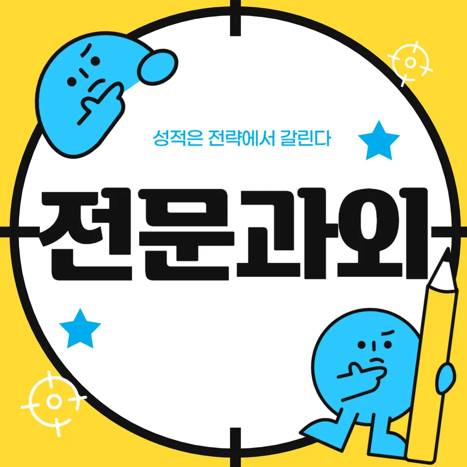

PageType : SUBJECT
URL : /경기도과외/안양시과외/만안구과외/석수동과외/석수동영어과외/
지역 교육환경이 영어 학습에 미치는 영향
석수동영어과외를 시작해 보면, 같은 영어라고 느껴도 학교와 학원 일정이 만드는 결이 다르다는 점을 먼저 체감하게 됩니다. 수업 시간표가 촘촘한 편이면 학생은 듣기와 읽기를 “진행”만 하게 되고, 쉬는 날이 길면 오히려 복습과 어휘 누적에 시간이 생깁니다. 그래서 석수동영어과외에서는 학습 환경을 단순히 “열심히”로만 해석하지 않고, 어떤 날에 무엇을 더 남길 수 있는지부터 점검합니다.
지역의 학습 분위기도 영향을 줍니다. 학교에서 영어 활동이 활발한 학급은 발표와 질의응답 경험이 늘어나 자연스럽게 흥미가 유지되는 반면, 조용한 분위기에서는 학생이 질문을 미루다 보면 독해에서 막히는 순간이 늦게 오지만 한 번에 누적됩니다. 석수동영어과외 학습 기록을 보면, 학생들이 어려움을 겪는 지점은 대부분 시험 직전이 아니라 “평소 이해가 끊긴 날”에서 시작합니다.
또한 영어 실력의 차이는 단어 수의 차이보다, 그 단어가 문장 속에서 이해로 이어지는 속도에서 갈립니다. 학교에서 단어를 외우는 방식이 즉각적인 활용 없이 끝나면, 시간이 지나면 어휘가 회상되지 않습니다. 석수동영어과외에서는 어휘를 정답 체크용으로 소모시키지 않고, 듣기에서 들리는 형태와 독해에서 보이는 형태를 함께 연결해 “기억이 남는 공부”로 바꿉니다.
학교마다 달라지는 영어 평가 방식
학교마다 영어 평가의 무게중심이 다르기 때문에, 석수동영어과외는 수업 방향을 한 가지로 고정하지 않습니다. 어떤 학교는 내신에서 서술형 비중이 커서 문장 흐름을 정리하는 훈련이 필요하고, 다른 학교는 선다형이 중심이라 문장 속 신호어를 빠르게 포착하는 감각이 더 중요합니다. 평가 방식이 달라지면 같은 진도표라도 학생이 “공부했다고 느끼는 부분”이 달라집니다.
수행평가가 있는 학교에서는 발표나 글쓰기 준비가 단기 일정으로 몰리기도 합니다. 이때 학생은 문법을 공부하기보다 표현을 만들어야 하므로, 배운 내용을 실제 구문으로 조합하는 경험이 필요해집니다. 석수동영어과외에서는 학교별 영어 평가 방식을 확인한 뒤, 학교 수업에서 다루는 어휘와 구문이 실제 산출로 이어지는 흐름을 만들어 줍니다.
평가의 형태가 바뀌면 오답의 성격도 바뀝니다. 단순 실수형 오답은 시간이 지나면 줄지만, 이해 부족형 오답은 복습의 방식이 바뀌지 않으면 반복됩니다. 석수동영어과외에서는 시험지의 점수보다 “왜 틀렸는지의 유형”이 바뀌는 과정을 추적합니다.
학생들이 영어에서 어려움을 느끼는 시점
대부분의 학생은 영어에 대한 자신감이 한 번 흔들리는 시기가 있습니다. 수업을 따라가던 흐름이 독해 문단으로 넘어가며 문장 사이 관계를 스스로 잡아야 할 때, 또는 듣기에서 속도가 붙는 구간에서 시작됩니다. 석수동영어과외에서는 그 시점을 “나태”로 보지 않고, 문장 이해가 끊기는 구조적 이유를 먼저 확인합니다.
어휘가 쌓이는 과정이 끊기는 순간도 자주 나타납니다. 예를 들어 단어장을 열심히 만들었는데도 읽기에서 다시 찾지 못하면, 그 단어는 외운 것이 아니라 “잠깐 본 것”으로 남았을 가능성이 큽니다. 석수동영어과외는 듣기에서 들리는 발음 형태와 독해에서 보이는 철자 형태를 함께 붙여, 단어가 다시 소환되는 경험을 늘립니다.
문법 역시 같은 방식입니다. 문법을 알고 있는데도 문제 상황에서 적용이 안 되면, 학생은 “나는 문법이 약해”라고 단정하고 흥미를 줄입니다. 석수동영어과외에서는 설명을 길게 늘리기보다, 배운 문법 요소가 문장 속에서 어떻게 의미를 바꾸는지 체감하도록 학습 동선을 조정합니다.
학년 변화에 따른 영어 학습의 차이
학년이 올라가면 학습 부담이 단순히 “양”에서 끝나지 않고 “처리 방식”을 바꾸어야 합니다. 앞 학년에는 문장을 한 줄씩 해석하는 방식이 가능하지만, 학년이 올라갈수록 문단 전체의 중심과 전개가 필요해집니다. 이때 석수동영어과외 학습 계획은 독해를 단어 합으로 보는 습관부터 정리하는 쪽으로 이동합니다.
중간고사와 기말고사를 중심으로 움직이던 패턴이, 시험 기간에는 훨씬 촘촘한 일정으로 재편됩니다. 시험 직전에는 듣기·읽기·내신 유형이 한꺼번에 요구되면서 학생이 우선순위를 자꾸 바꾸게 됩니다. 석수동영어과외에서는 시험 기간의 효율을 “무엇을 버릴지”로 결정하지 않고, 하루 안에서 복습과 새 문제의 비율을 고정해 흔들림을 줄이는 방식으로 접근합니다.
학년이 바뀌면 자기주도학습의 빈도도 달라집니다. 학교 숙제만으로 굴러가던 학생이 어느 시점부터는 오답과 복습을 스스로 처리해야 성장이 이어집니다. 석수동영어과외는 처음부터 혼자 맡기기보다, 오답 정리가 자리 잡는 과정을 단계적으로 설계해 학생이 스스로 다시 시작할 수 있는 구조를 만듭니다.
내신과 수행평가를 함께 준비하는 방법
내신과 수행평가를 동시에 준비하려면, 학교 수업에서 다뤄진 내용이 “점수화”되는 경로를 알아야 합니다. 어떤 학교는 단원별 핵심 문장과 표현을 중심으로 내신이 나오고, 다른 학교는 서술과 근거 제시 비중이 커서 문장 논리를 더 요구합니다. 석수동영어과외는 학교 수업의 흐름을 그대로 이어받아, 학생이 내신에 필요한 영어 실력을 수행평가에서도 활용하도록 맞춥니다.
수행평가 준비에서 학생이 자주 겪는 변화는 문장을 쓰는 순간이 오히려 이해를 흐리게 만든다는 점입니다. 알고 있는 단어와 구문을 조합하려다 보면 문법이 틀어지고, 그러면 다시 읽기와 듣기가 약해집니다. 석수동영어과외에서는 수행평가 과제를 독립된 작업이 아니라 독해 훈련의 연장으로 연결합니다.
내신 준비는 시험 범위가 정해지는 순간부터 계획이 달라져야 합니다. 석수동영어과외는 시험 범위에 맞춰 독해와 문장 이해를 되짚고, 어휘 학습이 누적되도록 반복 회수를 조절합니다. 복습과 오답을 뒤로 미루는 대신, 학교에서 배운 내용이 다음 수업에 자연스럽게 연결되도록 리듬을 잡습니다.
꾸준한 학습 습관이 만드는 영어 실력
영어를 꾸준히 공부하는 습관은 “매일 같은 양”보다 “매일 같은 방식”에 더 가깝습니다. 석수동영어과외에서는 학생이 스스로 공부할 때도 듣기와 읽기를 분리하지 않도록 유도합니다. 예를 들어 짧은 듣기 후에는 바로 읽기로 넘어가고, 읽기에서 막히는 구문을 오답과 복습의 재료로 삼습니다.
공부 습관이 자리 잡는 과정에서 중요한 건 감정의 관리입니다. 흥미가 떨어지는 시점이 오면 학생은 공부를 늘리기보다 회피합니다. 석수동영어과외는 그 시점에 맞춰 과제를 줄이는 방식이 아니라, 실패를 확인할 수 있는 구조로 바꾸는 쪽을 선택합니다. 실패가 보이면 다시 시도할 수 있고, 다시 시도하면 영어에 대한 기대가 남습니다.
시간을 효율적으로 사용하는 방법도 습관으로 쌓입니다. 시험 기간에는 문제를 더 많이 풀고 싶어지지만, 이때 복습과 오답 정리가 함께 가지 않으면 다음 날의 독해가 똑같이 무너집니다. 석수동영어과외는 새 문제와 복습의 순서를 고정해, 학생이 ‘어제 배운 것을 다시 읽는 경험’을 잊지 않게 합니다.
복습과 오답 관리가 중요한 이유
복습과 오답은 결과를 다시 쓰는 일이 아니라, 이해의 경로를 다시 만드는 작업입니다. 같은 유형의 오답이 반복될 때 학생은 “운이 나빴다”고 생각하지만, 실제로는 문장 이해의 연결고리가 빠진 경우가 많습니다. 석수동영어과외에서는 오답을 모아두되, 그대로 넘어가지 않도록 원인을 문장 단위로 쪼개 확인합니다.
복습은 단순 재독이 아니라 회상과 재적용을 포함해야 합니다. 학생이 단어를 봐도 떠오르지 않으면, 어휘 학습이 누적되지 않은 것입니다. 그래서 석수동영어과외에서는 오답에서 등장한 어휘와 구문을 듣기·읽기 흐름 안에 다시 넣어, 학생이 문장 속에서 의미를 다시 찾게 합니다.
오답 정리가 이어지는 과정에서 자기주도학습이 강해집니다. 학생이 스스로 “다음에 어떻게 할지”를 적기 시작하면 공부 습관은 자동으로 지속됩니다. 석수동영어과외는 학생이 작성한 오답 메모가 점점 짧아지고 정확해지는 변화를 중요하게 봅니다. 그 변화가 바로 학습의 질이 바뀌는 신호입니다.
영어 학습에서 확인해야 할 핵심 요소
석수동영어과외에서 성장을 확인할 때는 한 번의 점수보다, 영어 공부 전 과정이 연결되는지 확인합니다. 독해에서 문장 이해가 흔들리면 문법과 어휘가 제대로 작동하지 않은 것이고, 듣기가 약해지면 읽기에서 속도가 떨어지며 시간 압박이 커집니다. 따라서 균형을 잡는 기준을 분명히 가져가야 합니다.
또 다른 핵심은 시험 기간 학습 패턴의 변화입니다. 학생이 시험이 가까워지면 새 문제만 집중하고 복습을 줄일 때, 영어 실력은 보이던 것처럼 유지되지 않습니다. 석수동영어과외는 시험 기간에도 오답과 복습의 최소 단위를 지키게 하여, 단기 기억이 아니라 장기 기억으로 남는 구조를 만듭니다.
- 학교 시험 범위와 학습 계획이 연결되고 있는지 확인합니다.
- 독해·문법·어휘를 분리하지 않고 함께 학습하는 습관을 기릅니다.
- 오답의 원인을 분석하고 반복되는 실수를 줄이는 과정을 이어갑니다.
- 정기적인 복습으로 학습 내용을 장기 기억으로 연결합니다.
석수동영어과외로 학습 흐름을 점검하는 체크 포인트
학습 과정에서 확인해야 할 핵심 요소를 하나의 흐름으로 묶으면, 석수동영어과외가 제공하는 수업 방향도 더 명확해집니다. 먼저 듣기에서 단서가 잡히는지, 그 단서가 독해에서 중심 문장으로 이어지는지, 문장 이해가 되면 어휘와 구문이 실제로 회상되는지 확인합니다. 그 다음에는 문법이 지식으로 끝나지 않고, 문제 상황에서 실제 적용되는지 관찰합니다.
이 흐름이 자리 잡으면 학생이 영어에 흥미를 유지하는 기간이 늘어납니다. 어휘 학습이 누적되고 문장 이해가 안정되면, 공부 습관은 부담이 아니라 루틴이 됩니다. 결국 영어를 꾸준히 공부하는 힘은 “할 수 있다”는 감각에서 나오는데, 그 감각은 석수동영어과외의 복습·오답 과정에서 가장 자주 형성됩니다.
학교와 가정에서 이어지는 학습 환경도 함께 고려해야 합니다. 학교에서는 시험 범위에 맞춰 움직이고, 가정에서는 오답과 복습을 통해 연결을 완성합니다. 두 환경이 끊기지 않을 때 학생의 영어 실력은 단계적으로 성장합니다. 시험이 끝난 뒤에도 다음 단원을 미리 준비하며, 독해와 문장 이해의 폭이 넓어지는 변화를 기대할 수 있습니다.
자주 묻는 질문
영어 학습은 언제부터 체계적으로 준비하는 것이 좋을까요?
학습이 시작되는 시점보다 “끊기는 지점”이 언제인지부터 잡는 편이 빠릅니다. 보통 독해에서 문단 중심이 필요해지는 시기, 듣기 속도에서 당황하는 시기, 그리고 어휘가 회상되지 않는 날이 반복되는 때 체계가 필요해집니다. 석수동영어과외는 그 변화를 기준으로 계획을 재정렬합니다.
학교 내신과 모의고사는 어떻게 함께 준비해야 하나요?
내신이 다루는 단원 범위를 먼저 기준으로 잡고, 모의고사는 그 범위에서 연습하는 방식으로 연결합니다. 같은 어휘·구문·문장 패턴을 시험 환경에서 다시 만나게 해야 복습이 의미를 갖습니다. 석수동영어과외에서는 새 문제만 늘리는 방식 대신 오답의 반복 유형을 줄이는 쪽으로 준비를 맞춥니다.
영어 독해 실력은 어떤 과정으로 향상될 수 있나요?
독해는 단어 해석이 아니라 문장 이해의 연결이 쌓일 때 좋아집니다. 그래서 듣기 단서와 읽기 전개를 함께 확인하고, 중심 문장과 근거 문장이 어떻게 이어지는지 반복해서 잡아야 합니다. 석수동영어과외는 문단 속 구문을 통해 학생의 이해 경로가 안정되는지 확인합니다.
어휘와 문법은 어떤 순서로 학습하는 것이 효과적인가요?
어휘는 목록으로 끝나기 쉬워서, 문장 속 구문과 함께 회상되는 경험을 먼저 만들 필요가 있습니다. 그 다음 문법 요소가 의미를 어떻게 바꾸는지 실제 문장 상황에 적용해 보게 합니다. 석수동영어과외는 어휘·문법·구문을 분리하지 않고 오답에서 다시 학습하도록 설계합니다.
공부 습관을 꾸준히 유지하려면 무엇이 중요할까요?
동기보다 루틴이 먼저 필요합니다. 짧은 시간이라도 듣기·읽기·복습·오답 정리가 연결되도록 최소 단위를 정하면 시험 기간에도 흔들리지 않습니다. 석수동영어과외는 학생이 스스로 오답을 정리하고 다시 시도하는 흐름이 자리 잡는 과정을 함께 점검합니다.
